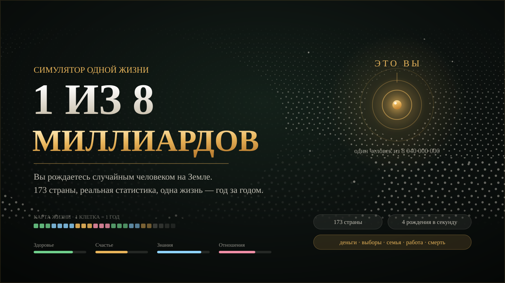

новое · 173 страны · реальная статистика1 ИЗ 8 МИЛЛИАРДОВсимулятор одной случайной жизни
Вы рождаетесь случайным человеком на Земле: 17,6 % — Индия, 5,7 % — Нигерия, 1 % — Россия, 0,06 % — Швейцария. Дальше одна жизнь идёт год за годом — школа или работа с двенадцати, деньги, которые надо на что-то тратить, болезни, любовь, дети, война, переезд и смерть по таблицам смертности своей страны.
- Жребий по числу рождений или по населению: 173 страны и территории
- Эпохи: прошлое с 1950 года, сегодня, будущее до 2100 — мир пересчитывается на год рождения
- Здоровье, счастье, знания, отношения — и семь статей расходов на ползунках
- Живой портрет: человек стареет прямо на экране, 136 анимаций без единой картинки
- Меню «Траты»: 69 покупок в 9 разделах — от тетрадей и репетитора до операции, жилья и своего кафе
- 21 карточка решений, 49 событий и вопросы-паузы в 5, 15, 30, 50 и 70 лет
- Летопись жизни, карта прожитых лет, четверо «родившихся в ту же секунду»
- Финал: запись о смерти, кривая выживаемости сверстников, карточка в PNG
- Модель сверена с данными: средняя ошибка продолжительности жизни — 0,66 года